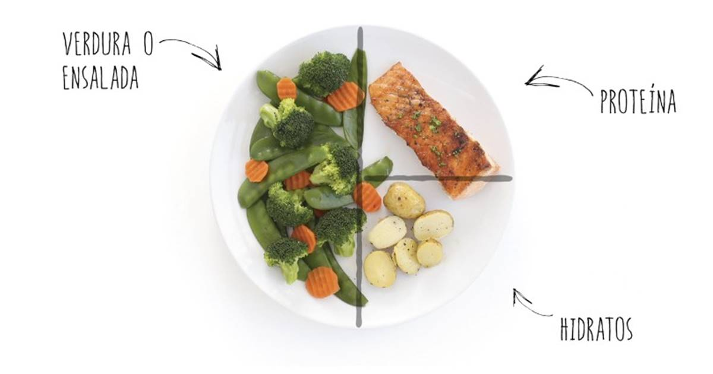

1. Aplica el Método del Plato Saludable
Divide imaginariamente tu plato en proporciones simétricas. La mitad debe contener vegetales y hortalizas variadas, un cuarto proteína magra de calidad, y el cuarto restante carbohidratos complejos o granos integrales.
